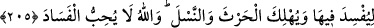

SULH VE SELÂM
204. İnsanlardan öyleleri vardır ki, dünyâ hayatı hakkında söyledikleri senin
hoşuna gider. Hatta böylesi kalbinde olana (samimi olduğuna) Allah’ı şahit tutar.
Halbuki o, hasımların en yamanıdır.
205. O, dönüp gitti mi (yahut bir iş başına geçti mi) yeryüzünde ortalığı fesâda
vermek, ekinleri tahrip edip nesilleri bozmak için çalışır. Allah bozgunculuğu
sevmez.
206. Böylesine “Allah’dan kork!” denilince benlik ve gurûr kendisini günaha
sevkeder. (Cezâ ve azâb olarak) ona cehennem yeter. O ne kötü yerdir!
207. İnsanlardan öyleleri de var ki, Allah’ın rızâsını almak için kendini ve malını
fedâ eder. Allah da kullarına şefkatlidir.
208. Ey îmân edenler! Hep birden barışa girin. Sakın şeytanın peşinden gitmeyin.
Çünkü o, apaçık düşmanınızdır.
209. Size (Kur’ân ve Sünnet gibi) apaçık deliller geldikten sonra, eğer barıştan
saparsanız, şunu iyi bilin ki Allah azîzdir, hakîmdir.
210. Onlar, ille de buluttan gölgeler içinde Allah’ın ve meleklerinin gelmesini mi
beklerler? Halbuki iş bitirilmiştir. (Allah nizamı artık değişmez.) Bütün işler
yalnızca Allah’a döndürülür.